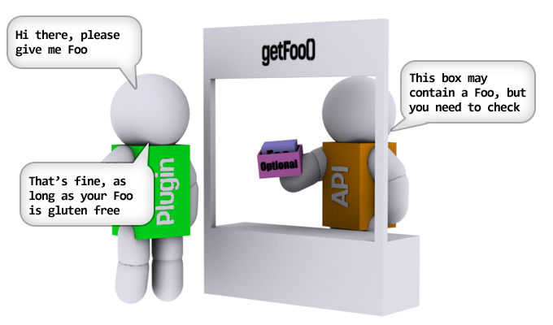

Belirtilen özellikler¶
Much of SpongeAPI makes use of Java’s Optional system on object accessors, but if you’ve never used Optional
before this might seem like a bit of a peculiar way of doing things. You might be tempted to ask:
“why do I need to perform an extra step when fetching something from an API object?”
This section gives a brief summary of Optional and explains how - and perhaps more importantly why -
it’s used throughout SpongeAPI.
Biraz eskiye gidelim ve erişimcilerin - özellikle de “getters” - ``Optional``kullanmadan nasıl çalıştıklarına göz atalım.
1. Bahsedilen Nullable Sözleşmeleri ve neden bahsedildiği¶
Diyelim ki, getFoo()``yöntemiyle ``Entity adında basit bir API Nesnemiz var ve bu nesne, ``Foo``yu döndürüyor.

Daha önceden, eklentimiz getter işlevini kullanarak Foo yı şu şekilde alıp kullanabilirdi:
public void someEventHandler(Entity someEntity) {
Foo entityFoo = someEntity.getFoo();
entityFoo.bar();
}
Sorun çıktığında - API aşamasında - yöntemin null e döndürülebileceğinin (veya döndürülemeyeceğinin) konusunda``getFoo`` yönteminde * bahsedilen* bir sözleşmeye bağlı kalmak zorundayız. Bu bahsedilen sözleşme iki yoldan biriyle tanımlanabilir:
- ** Javadoc’da ** - bu, yöntem için javadoc’a erişen eklenti yazarına açık olmayabilir. Yapılan iş çok faydalı değil
- ** Null olabilecek ek açıklamaları ** - IDE veya derleyici ek açıklamaları işlemek için güvenilir bir araç gerekir, çünkü genel itibarla kullanmak ideal değildir.

getFoo() yönteminin sözleşmenin bir parçası olarak null döndürdüğünü varsayalım. Burada``entityFoo`` değeri boşsa, NullPointerException ile sonuçlanabileceği için yukarıdaki kodun güvensiz olduğu anlamına gelir.
public void someEventHandler(Entity someEntity) {
Foo entityFoo = someEntity.getFoo();
entityFoo.bar();
}
Eklenti yazarımızın getFoo yönteminin geçersiz niteliğini araştırdığını ve sorunun null denetimi ile düzeltilmeye karar verdiğini varsayalım. Bir sabite Foo tanımladığını varsayarsak, sonuçta ortaya çıkan kod şöyle görünür:
public void someEventHandler(Entity someEntity) {
Foo entityFoo = someEntity.getFoo();
if (entityFoo == null) {
entityFoo = MyPlugin.DEFAULT_FOO;
}
entityFoo.bar();
}
In this example, the plugin author is aware that the method can return null and has a constant available with a
default instance of Foo which can be used instead. Of course, the plugin could just short-circuit the call entirely,
or it could attempt to fetch Foo from somewhere else. The key message is that handling nulls even in simple cases
can lead to spaghetti code quite quickly, and moreover relies on the plugin author to explicitly visit the method’s
contract to check whether a null check is necessary in the first place.
Ancak tek dezavantajı bu değildir. API’yi uzun vadede ele alalım ve yazarın eklentiyi yazdığı sırada, javadoc yöntemini ziyaret ettiğini ve yöntemin hiçbir zaman null döndürmeyeceğini garanti ettiğini varsayalım (her`Entity`te daima bir Foo mevcut). Mükemmel! Artık kontrol gerekli değil!
Ancak şimdi oyunun sonraki bir sürümünde, oyun geliştiricilerin Foo kavramını kaldırdığını veya reddettiğini varsayalım. API yazarları buna göre API’yi günceller ve bundan böyle getFoo () `` yöntemi ** ``null döndürebilir ve bunu javadoc yöntemine yazar. Şimdi bir sorun var: yöntem sözleşmesini ilk kez kod yazarken kontrol eden çalışkan eklenti yazarları farkında olmadan metodu hatalı bir şekilde işlemekteler: hiçbir boşluk yerine getFoo den döndürülen Foo işlevini kullanan herhangi bir kod yoksa bu NPE’yi artıracaktır.
Thus, we can see that allowing implicit nullable contracts leaves us with a selection of pretty awful solutions to choose from:
- Eklenti yazarları, ** ** yöntemlerin boşa dönebileceğini ve buna göre savunucuyu kodlandırabileceğini varsayabilir, bunun zaten spagetti koduna oldukça seri yol açtığını görmüştük.
- API yazarları, sadece önceki yaklaşımı daha da kötüleştiren eklenti yazarının sorununun null işlenmesine neden olmak için her API yönteminde ima edilen bir null sözleşmeyi tanımlayabilir.
- API yazarları, tanımladıkları tüm bahsedilen null sözleşmelerini, ileriye dönük olarak değiştirilmeyeceğini iddia edebilirler. Bu, bir oyunun temel oyundan kaldırılmasının gerektiği sonucuna varılacağı anlamına gelir:
- Bazı istisnaları saymazsak kolay sayılabilecek bir kod başka yerdeki bir kodu tetikletebilir ve zayıf NPD ortaya çıkartır. Bunu teşhis etmek zor olacaktır
- “Sahte” bir nesne veya geçersiz değer döndürürseniz, eklenti kodu çalışmaya devam edeceğini, ancak API geliştiricilerini zorlayıcı unsurlar barındıracağını, kullanımdan kaldırılan her özellikte daha sahte nesnelerin oluşturulması gerekeceği anlamına gelir. Bu durum, kısa süre içinde büyük bir API yığınının, artık kullanılmayan API bölümlerinin dolu duruma gelmesine neden olabilir.
Belirtilen API son derece homojen olmayan bir temel üzerinde olduğundan, daha belirgin hale getirmek için * bahsedilen * null sözleşmelere eklenmiş bazı önemli sorunlara karşı açık olmalıdır. Neyse ki daha iyi bir yol var:
2. İsteğe bağlı ve Açık Anlaşılabilir Sözleşme¶
As mentioned above, APIs for Minecraft are in a difficult situation. Ultimately, they need to provide a platform with a reasonable amount of implied stability atop a platform (the game) with absolutely no amount of implied stability. Thus, any API for Minecraft needs to be designed with full awareness that any aspect of the game is liable to change at any time for any reason in any way imaginable; up to and including being removed altogether!
Bu dalgalanma yukarıda açıklanan boşaltılabilen yöntem sözleşmeleriyle ilgili soruna neden olmaktadır.
İsteğe bağlı, gizli sözleşmeler*i, *açık olanlarla değiştirerek yukarıdaki problemleri çözer. API, asla duyurmaz, “burada nesneniz, kthxbai” yerine “burada, istediğiniz nesneyi içerebilecek veya içermeyebilecek bir kutu olan, ymmv”’e olan erişimcileri sunar.
null’un açık bir sözleşme olma ihtimalini kodlayarak, * null denetleme* kavramını incelikli var olmayabilir kavramı ile değiştiriyoruz. Ayrıca bu sözleşmeyi günden itibaren şart koşuyoruz.
So, what does this mean?
Özetle, artık yazarların null’un geri gelme ihtimali hakkında endişelenmelerine gerek yok. Buna karşılık belirli bir nesnenin var olmama ihtimali eklenti kodunun dokusuna göre kodlanır hale gelir. Bu null denetimleri sürekli olarak uygulanırken aynı düzeyde güvenlik içerebilir, ancak bunu yapmak kodun okunabilmesi ve düzenli olması açısından çok daha iyi hale gelir.
Bunun nedenini görmek için, yukarıdaki örneğe bir göz atalım: İsteğe bağlı<Foo>’ya geri dönme yöntemini getFoo kullanmaya dönüştürelim bunun yerine:
public void someEventHandler(Entity someEntity) {
Optional<Foo> entityFoo = someEntity.getFoo();
if (entityFoo.isPresent()) {
entityFoo.get().bar();
}
}
Bu örnek standart bir sıfırlama denetimi gibi görünmesine rağmen, İsteğe bağlı kullanımı aslında aynı miktar kodda biraz daha fazla bilgi taşır. Örneğin, yukarıdaki kodu okuyan birinin yöntem sözleşmesini kontrol etmesine gerek yoktur, yöntemin bir değeri geri getiremediği ve değerin yokluğunun işlenmesinin açık ve net olduğu açıktır.
Ne olmuş? Bu davadaki açık sözleşmemiz sıfırlama denetimi ile aynı miktarda kod temel alır - alıcı tarafından sözleşmeye dayalı olarak zorunlu da olsa. “Büyük bir mesele,” sen, “ne olmuş?” diyorsun
İsteğe Bağlı kutulama geleneksel olarak sıfırlama denetiminin daha değişik yönlerinden bazılarını almamıza ve bunları daha iyi hale getirmemize izin verir: aşağıdaki kodu takip edin:
public void someEventHandler(Entity someEntity) {
Foo entityFoo = someEntity.getFoo().orElse(MyPlugin.DEFAULT_FOO);
entityFoo.bar();
}
Hatta kalın! Yukarıdaki örnekte yer alan sıkıcı sıfırlama denetimini ve varsayılan atamayı tek bir kod satırı ile değiştirdik mi? Evet gerçekten yaptık. Aslında, basit kullanım örnekleri için, atamadan bile vazgeçebiliriz:
public void someEventHandler(Entity someEntity) {
someEntity.getFoo().orElse(MyPlugin.DEFAULT_FOO).bar();
}
MyPlugin.DEFAULT_FOO her zaman kullanılabilir olması şartıyla son derece güvenlidir.
Örneği takip ederek iki birimi göz önünde bulundurun, boşaltılabilen gizli bir sözleşme yapmak için ilk birimden Foo’yu kullanmanızı istiyoruz, eğer kullanılabilir değilse ikinci birim``den ``Foo’yu kullanın ya da ikisi de kullanılabilir değilse varsayılanımıza geri dönün:
public void someEventHandler(Entity someEntity, Entity entity2) {
Foo entityFoo = someEntity.getFoo();
if (entityFoo == null) {
entityFoo = entity2.getFoo();
}
if (entityFoo == null) {
entityFoo = MyPlugin.DEFAULT_FOO;
}
entityFoo.bar();
}
İsteğe bağlı’yı kullanarak bunu çok daha temiz şekilde kodlayabiliriz:
public void someEventHandler(Entity someEntity, Entity entity2) {
someEntity.getFoo().orElse(entity2.getFoo().orElse(MyPlugin.DEFAULT_FOO)).bar();
}
This is merely the tip of the Optional iceberg. In java 8 Optional also supports the Consumer and
Supplier interfaces, allowing lambdas to be used for absent failover. Usage examples for those can be found on the
Kullanım örnekleri page.
Not
Geçersiz referanslardan kaçınmanın arkasındaki gerekçelere ilişkin bir başka açıklamayı Guava: Sıfırlama Açıklamasının Kullanılması ve Kullanılmaması Kriteri <https://github.com/google/guava/wiki/UsingAndAvoidingNullExplained/> _ ‘da bulabilirsiniz. Bağlantılı makalede belirtilen guava İsteğe bağlı sınıfının, javaya ait java.util.Optional’dan farklı olduğuna ve burada kullanılanlardan farklı metod isimlerine sahip olduğuna dikkat edin.